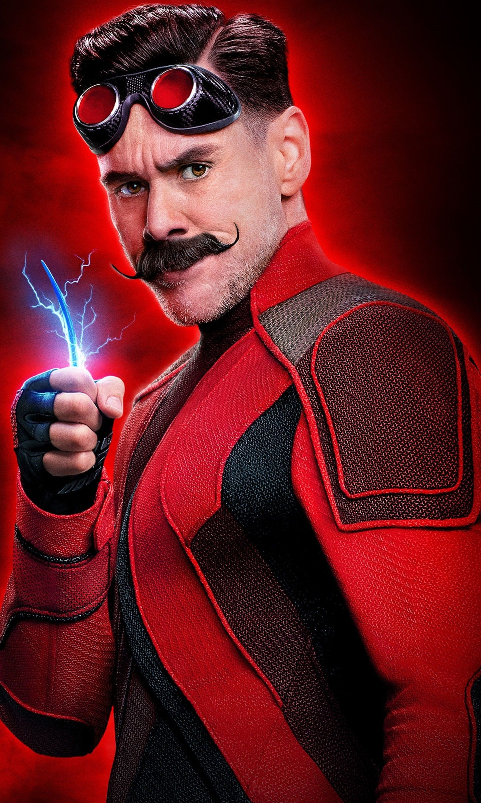
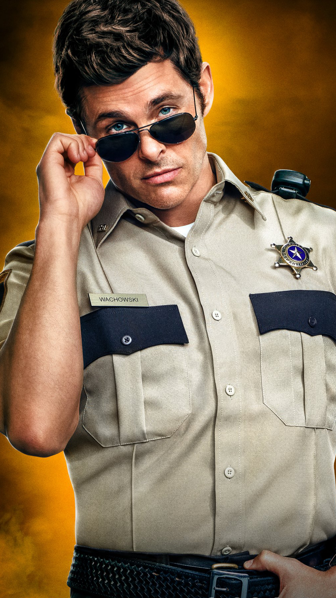
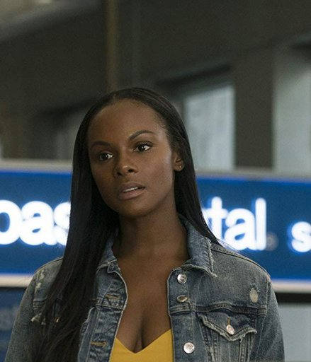
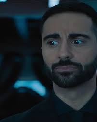

Sonic the Hedgehog és una pel·lícula de comèdia, d'acció d'aventura del 2020 basada en la franquícia de videojocs del mateix nom publicada per Sega. La pel·lícula està dirigida per Jeff Fowler i escrita per Pat Casey i Josh Miller. Jeffrey Fowler és un cineasta nord-americà, director, guionista, animador i artista d'efectes visuals. Va ser nominat al premi a l'Acadèmia al millor curtmetratge d'animació com a escriptor i director del curtmetratge d'animació Gopher Broke.
Sonic the Hedgehog, és el protagonista principal de la pel·lícula Sonic La Pel·lícula, Sonic va néixer en una illa similar a Green Hill Zone dels videojocs, i va ser criat per la sàvia Longclaw, que havia advertit a Sonic que no mostrés els seus poders, ja que hi havia qui ho cobejaven i el volien per a si mateixos. Un dia, quan Sonic va tornar a casa en Longclaw amb una flor, ell i Longclaw van ser atacats per un grup de guerrers equidnas que havien vist a Sonic i el van seguir fins a la cabana de Longclaw. Quan Longclaw és ferida per una de les seves fletxes, s'adona que Sonic ja no estarà fora de perill amb ella, i fent servir un Ring, convoca un portal perquè Sonic escapament a través d'ell, donant-li la bossa d'anells per a usar en cas que necessiti fugir per protegir-se de les amenaces, abans d'enviar a través d'ell i fer una última i heroica resistència per mantenir els guerrers equidnes fora fins que el portal es dissolgui i Sonic quedi encallat al món a què Longclaw el va enviar..
Doctor Robotnik (Eggman) és el principal antagonista de Sonic: La Pel·lícula. És un científic excèntric que planeja capturar a Sonic the Hedgehog, i és l'archienemigo de l'heroi. Està planejant drenar i neutralitzar els poders de Sonic per tenir el poder de dominar tot el món. El govern està actualment aliat amb ell.
Tom va néixer i es va criar a Green Hills, Montana. Està implícit que ve d'una llarga línia de policies tots nadius de Green Hills. En algun moment abans dels esdeveniments de la pel·lícula, Tom es va casar amb Maddie i va tenir dos treballs mentre Maddie assistia a l'escola de veterinària. A l'decidir que volia mudar-se de Green Hills i treballar com a policia en ciutats més grans, va presentar una sol·licitud per a un lloc a San Francisco, Califòrnia, com a part de el Departament de Policia de Sant Francesc, en lloc del seu lloc com Sheriff de Green Hills i cap de Departament de Sheriff de Green Hills.
Maddie és l'esposa de Tom i és veterinària a Green Hills, Montana. En algun moment abans dels esdeveniments de la pel·lícula, es casa amb Tom i assisteix a l'escola de veterinària. Ella, juntament amb Tom, ajuda a Sonic a recuperar els seus anells
L'agent Stone apareix per primera vegada acompanyant el Dr. Robotnik per investigar el pols electromagnètic causat per Sonic a Green Hills. Ell "tradueix" les paraules de Robotnik per al Major Bennington mentre afirma el seu domini i comença la investigació. Més tard és present quan Robotnik analitza l'empremta de Sonic
